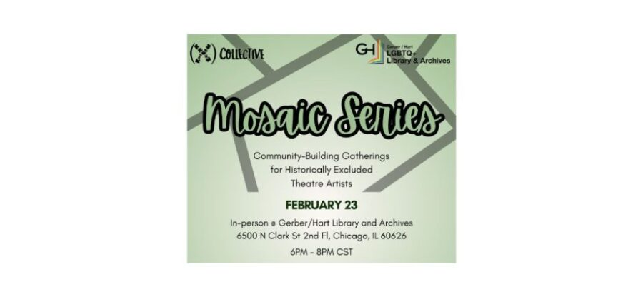

Mosaic Series
On Monday, February 23rd, at 6 PM Gerber/Hart will host (X) Collective’s Mosaic Series.
For their February gathering, they will be hosting LGBTQ+ theatre artists who work in or around the Chicago area for connection, relationship-building, and peer resource-sharing.
The Mosaic Series is a rotating series of affinity gatherings designed to foster connections amongst theatre artists who have been historically excluded and denied access to space, resources, and opportunities.
Each gathering focuses on a different identity (Black, Indigenous, and People of Color; LGBTQ+; individuals with disabilities). The February gathering will be held in-person at Gerber/Hart Library and Archives and will be facilitated by Dionne Addai.
Registration is pay what you can. The registration questions are designed to support tailoring the space to those in attendance.
Light refreshments will be provided!
Learn more and RSVP for this event here